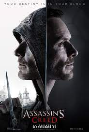

Library
Check out some of our recent projects:

Assassins: Blood and Money
This is an RPG game that we made to simulate a part of assassin's creed story. It simulates the part of loyality and courage. Enjoy!

Delta X
A remake of Interstellar (an unblockable website that loads apps, games and websites on public internet connections), but better. Loads fast, has more apps, games, and functionality.